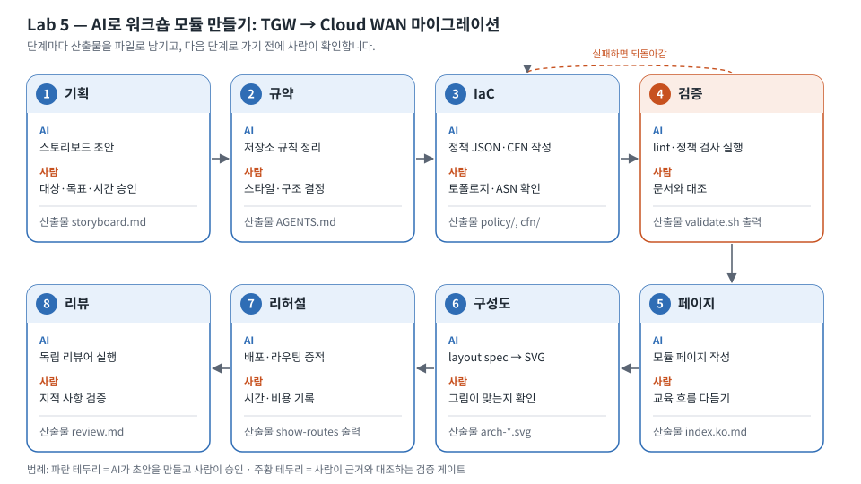
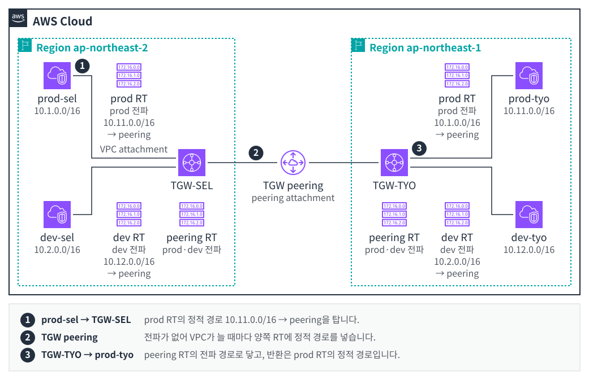

Lab 5. Workshop authoring — AI로 워크숍 만들기¶
Lab 1–4에서는 신규 기능을 테스트했습니다. Lab 5에서는 그 경험을 다른 사람이 따라 할 수 있는 워크숍으로 바꾸는 일을 AI와 함께 해 봅니다. 주제는 Networking SA가 자주 받는 요청인 "TGW에서 Cloud WAN으로 마이그레이션"입니다. 워크숍 전체가 아니라 모듈 하나("TGW를 Cloud WAN에 연결")를 기획부터 리허설 직전까지 만듭니다.
강사가 실제로 Cloud WAN·TGW 워크숍을 만들 때 쓴 흐름을 그대로 따라갑니다.

목표¶
- 대상·목표·시간을 주고 Claude에게 스토리보드를 받아, 사람이 승인하는 방식으로 워크숍을 기획합니다.
- 워크숍 저장소 규약을
AGENTS.md에 적어, 이후 모든 페이지·코드가 같은 형식으로 나오게 합니다. - Cloud WAN core network policy와 CloudFormation을 AI로 만들고, AI가 지어낸 키·속성을 문서와 도구로 걸러 내는 방법을 익힙니다.
- Workshop Studio 형식의 모듈 페이지와 공식 아이콘 구성도를 만듭니다.
라이프사이클에서의 위치¶
| 라이프사이클 | 이 Lab에서 하는 일 | 페이지 |
|---|---|---|
| 2 Plan 설계 | 스토리보드, 저장소 규약 | 5-1. 기획과 규약 |
| 3 Build 구축 · 4 Verify 검증 | core network policy, CloudFormation, 오프라인 검증 | 5-2. 토폴로지를 IaC로 |
| 6 Document 문서화 | 모듈 페이지, 구성도, 번역 | 5-3. 페이지와 구성도 |
| 4 Verify 검증 (리허설) | 선택 배포, 증적, 정리 | 5-4. 리허설(선택) |
리뷰(라이프사이클 7)는 Lab 6에서 이 Lab의 산출물을 대상으로 진행합니다.
시나리오: 만들 워크숍의 토폴로지¶
참석자(워크숍을 들을 고객 엔지니어)가 처음 받는 환경은 다음과 같습니다. 서울과 도쿄에 TGW가 하나씩 있고, TGW 간 peering으로 리전을 잇습니다. 각 TGW에는 prod RT와 dev RT가 있어 prod와 dev를 격리합니다.

| 리전 | TGW (ASN) | VPC | 라우팅 테이블 |
|---|---|---|---|
ap-northeast-2 서울 |
TGW-SEL (64600) | prod-sel 10.1.0.0/16, dev-sel 10.2.0.0/16 |
prod RT, dev RT, peer RT |
ap-northeast-1 도쿄 |
TGW-TYO (64601) | prod-tyo 10.11.0.0/16, dev-tyo 10.12.0.0/16 |
prod RT, dev RT, peer RT |
마이그레이션 후에는 Cloud WAN core network(edge: 서울·도쿄, 세그먼트: prod·dev)가 리전 간 경로를 맡습니다. 각 TGW는 core network와 peering하고, prod RT는 prod 세그먼트에, dev RT는 dev 세그먼트에 TGW route table attachment로 붙습니다. 마지막에 TGW 간 peering을 지웁니다.

진행 방식과 시간 (55분)¶
| 시간 | 내용 |
|---|---|
| 10분 | 5-1. 스토리보드, AGENTS.md |
| 15분 | 5-2. policy와 검사기는 직접 생성, CloudFormation은 정답을 복사해 lint·대조 |
| 20분 | 5-3. 모듈 페이지, 구성도 |
| 10분 | 5-4. 리허설 계획(배포는 선택), 정리 |
| 55분 |
작업 폴더 준비¶
starter kit을 복사해 Lab 5 전용 폴더를 만듭니다.
mkdir -p ~/ws-cloudwan-workshop
cp -r ~/starter-kit/. ~/ws-cloudwan-workshop/
cd ~/ws-cloudwan-workshop && git init -q
claude
Info
정답 예시는 ~/ws-solutions/cloudwan/에 있습니다. 먼저 직접 만들어 보고, 막히거나 끝난 뒤에 비교하세요. AI 결과는 매번 조금씩 다르므로 "정답과 똑같은가"가 아니라 "검증을 통과하는가"로 판단합니다.